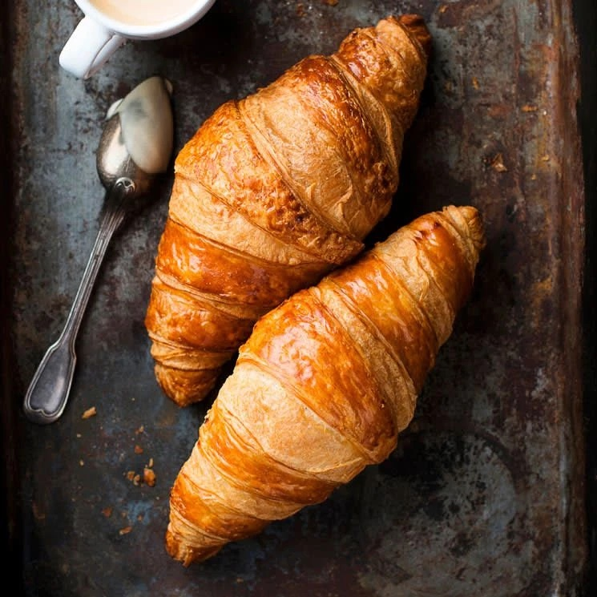

Pozuelo de Alarcón · Specialty Coffee
Pozuelo Coffee House — Un momento analógico en un mundo con prisas
Cafés especiales, tostadas brutales y bollería casera.


Los favoritos de la casa
Nuestros imprescindibles preparados cada mañana
-

Flat White
3,50 €Doble espresso de café de especialidad con leche vaporizada de textura sedosa.
-

Tostada de Pavo & Aguacate
6,70 € / 11,00 € completaPan de masa madre ecológica, solomillo de pavo a baja temperatura, aguacate, tomate natural y AOVE.
-

French Toast de Brioche
6,50 €Pan brioche hojaldrado casero con crema de mascarpone, fruta fresca de temporada y sirope de arce.
-

Croissant de Mantequilla
3,20 €Hojaldre artesanal elaborado a diario con mantequilla francesa.
-

Matcha Latte
4,00 €Té matcha ceremonial batido al momento con leche texturizada (opción fría o caliente).
Nueva carta, nuevo horario, cada día mejor.